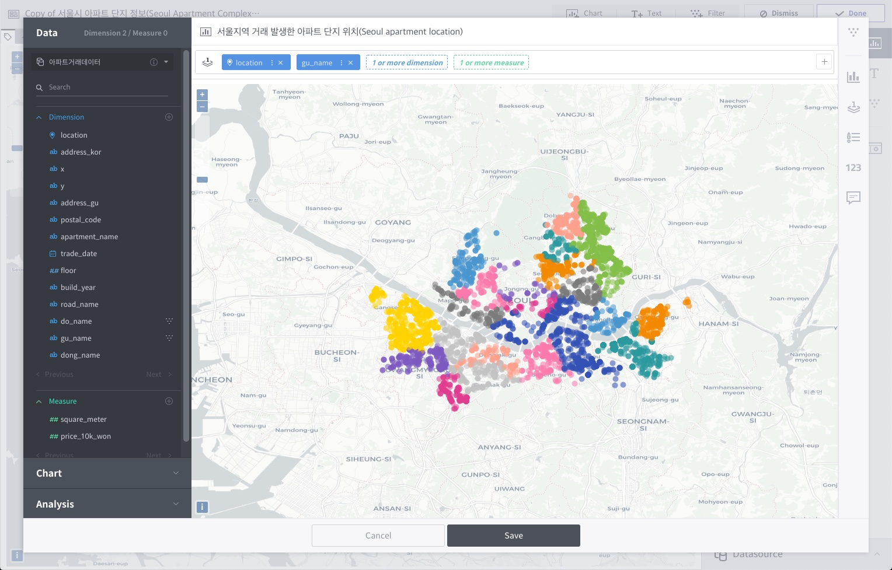
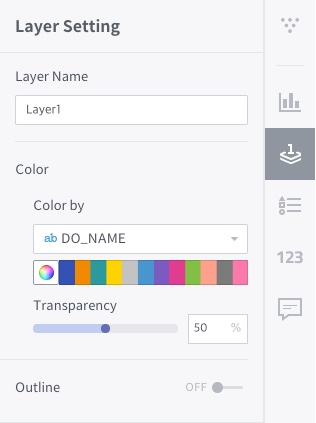

Map view and spatial operations¶
Metatron Discovery, from version 3.1.0 and up, offers a map view function for visualizations of location data. Creating a chart in map view involves different conditions compared to other chart types.

At least one location dimension is required.
Data is placed on map layer shelves instead of the row/column/intersection shelves.
Style properties are set for each layer.
Spatial operations are provided.
Location dimensions¶
To use map view, dimension columns of WKT geometry types such as Point, LineString, and Polygon must be placed on the layer shelf. There are largely three types of location data.
Point: This is a 2D coordinate geometry type comprised of x and y values. Similar to GPS data, a point has a latitude and longitude.
Line: This is a geometry type with line coordinates. WKT representations of LineString and MultiLineString are supported.
Polygon: This is a geometry type with shape coordinates. WKT representations of Polygon and MultiPolygon are supported.

Map layer shelves¶

Map view uses map layer shelves instead of the row/column/intersection shelves that are used by other chart types. A map layer shelf requires at least one location dimension.

When a string dimension is placed on a map layer shelf, data points are colored based on its elements; when the mouse is over a data point, the corresponding string is displayed in the data tooltip.

또한 측정값을 레이어 선반에 배치하면 측정값으로 색상을 분류하고 동시에 해당 측정값을 기준으로 포인트 크기를 다르게 표현합니다. 차원값과 마찬가지로 툴팁에 해당 측정값이 표기됩니다.

Add layer shelf¶
Click the + button on the right of a layer shelf to add another layer on top of the first layer. Each layer must use a different data source, and columns of only one data source are allowed to be placed per layer. Currently, up to two layer shelves are supported.

Style properties of map view layer¶
Common setting¶
지도 레이어에서 기본 지도를 표현하는 맵 스타일의 유형을 선택할 수 있습니다. OpenStreetMap을 활용하여 세 가지의 맵 스타일을 기본적으로 제공하고 있습니다.

Open Street Map Light (Default)
Open Street Map Dark
Open Street Map Colored
Layer settings¶
Sets how to express layers. When a layer shelf is added, separate setting menus are created for the first and second layers.
Layer properties of point type¶

Layer Name: Set a name of the layer for legend and tooltip settings in the map view.
Layer Type: Data points can be displayed on the map as
Point,Heatmap,Hexagon, orCluster. The point type is selected by default.Point Type: With
Pointselected as the layer type, you can choose the shape of data points from amongCircle,Square, andTriangle. Circle is selected by default. The shapes are displayed on the map when cluster use is set to Off.Color: Data points can be distinguished by color based on a string dimension or a measure on the layer shelf. A color can be picked from the palette if color standards are not available. The transparency can be set as a % value.
Size: If the layer type is
Point, data points can be distinguished by size based on a measure on the layer shelf.Outline: When set to On, an outline is drawn for each data point. The default is Off, and the color and thickness are customizable.
Cluster Distance: With
Clusterselected as the layer type, you can set the cluster distance as a % value. The use of clusters is recommended to optimize browser performance when working with a large number of data points.Blur: With
Heatmapselected as the layer type, you can adjust the blur effect on the heat map. The default is 20%.Radius: If the layer type is
HeatmaporHexagon, the display radius can be adjusted in the range of 1 to 100.
Layer properties of line type¶

Layer Name: Set a name of the layer for legend and tooltip settings in the map view.
Color: Data points can be distinguished by color based on a string dimension or a measure on the layer shelf. A color can be picked from the palette if color standards are not available. The transparency can be set as a % value.
Thickness: Set the line thickness.
Line type: Choose among a solid line, dotted line, and dashed line. The default is a solid line.
Layer properties of polygon type¶

Layer Name: Set a name of the layer for legend and tooltip settings in the map view.
Color: Data points can be distinguished by color based on a string dimension or a measure on the layer shelf. A color can be picked from the palette if color standards are not available. The transparency can be set as a % value.
Outline: When set to On, an outline is drawn for each polygon. The default is Off, and the color and thickness are customizable.
Legend settings¶
Choose whether or not to display a legend. The default is Off. The position of the legend can be set when turned on.

Spatial analysis¶
The map view of Metatron Discovery supports simple spatial analysis between two layers. Spatial operations can be set in the analysis tab on the left, and the current version supports two types of spatial operations.

Within: This returns values within a distance designated between elements of the Main and Compare Layers.
Intersection: This method returns overlapping areas between the Main and Compare Layers. Return values may vary with the scale of the geometry selected (Polygon > Line > Point).
Additional settings that can be customized for each operation are as follows:
Buffer: Set a tolerant distance within which the Main and Compare Layers could be compared. The distance can be set either in meters or in kilometers.
Choropleth map: The resulting layer can be displayed in the form of a choropleth map. The color scheme of the choropleth map can be selected; by default, colors are divided according to the data count. If the Main Layer includes a measure, colors can be changed based on its elements.